CREANTOR Naelly, étudiante en 3ème année de BUT MMI. Design, stratégie digitale, création de contenu : je transforme les idées en visuels qui marquent. Curieuse et rigoureuse, j'apporte une vraie vision créative aux projets sur lesquels j'interviens.
🎨 Design Graphique
📢 Communication
💻 Technique & Web
Cliquez sur un onglet pour voir les projets correspondants.
Projets scolaires

Affiche Wonder Breast

Faithful papeterie
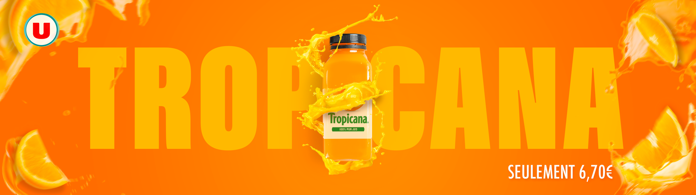
Bannière Tropicana
Projets Entreprise

Identité visuelle A K'abo

Identité visuelle Dwetaly Consulting
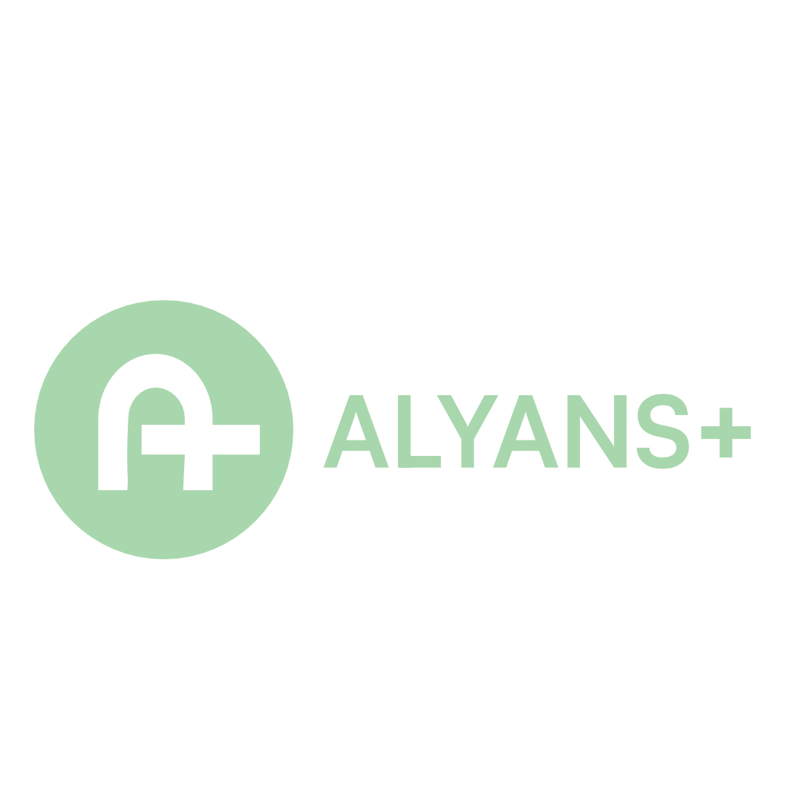
Propositions de logos Alyans +
Projets Personnels
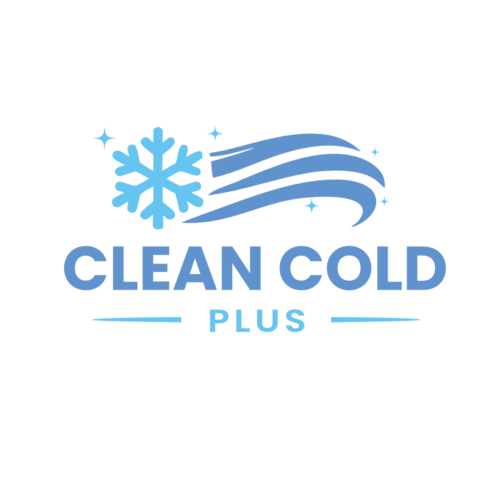
Logo Cleancold plus
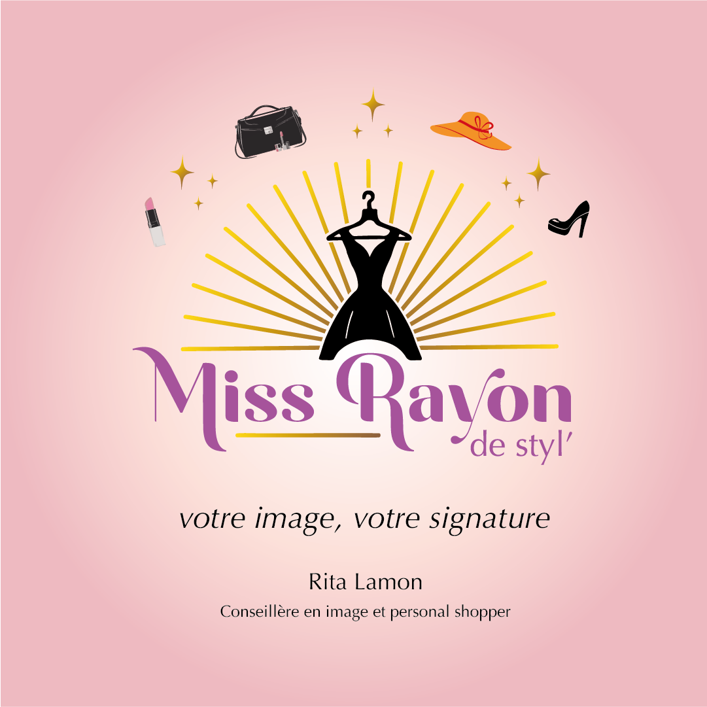
Logo Miss Rayon de styl'
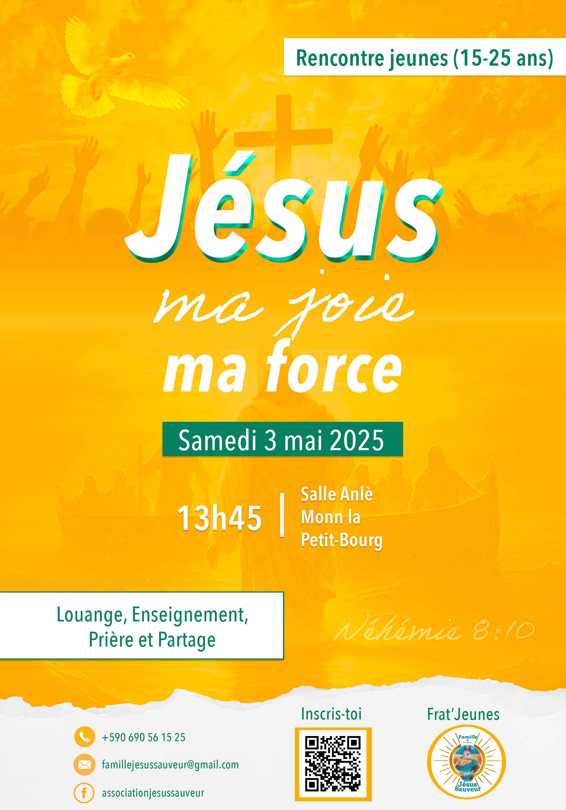
Flyer évènement association

Flyer évènement association
Projets scolaires
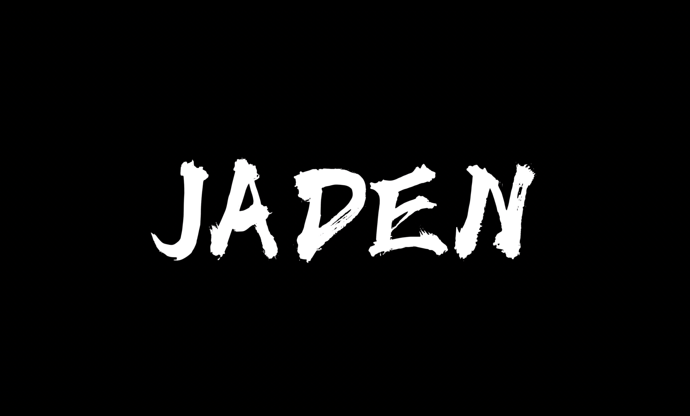
Documentaire JADEN
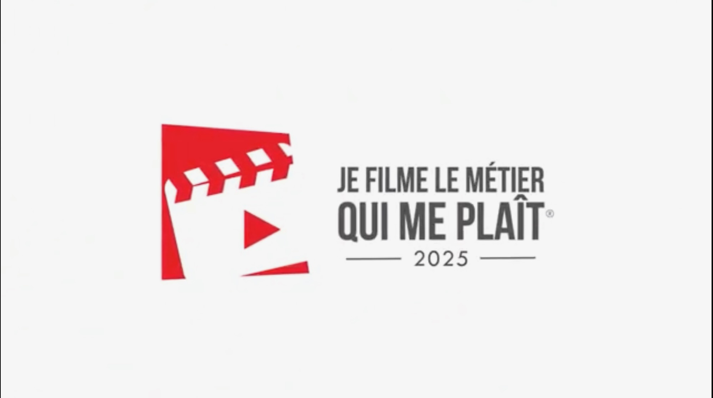
Reportage métier RH/Paie
Projets scolaires

Stratégie marketing Ansanm Cowork

Stratégie éditoriale Latè
Projets entreprise
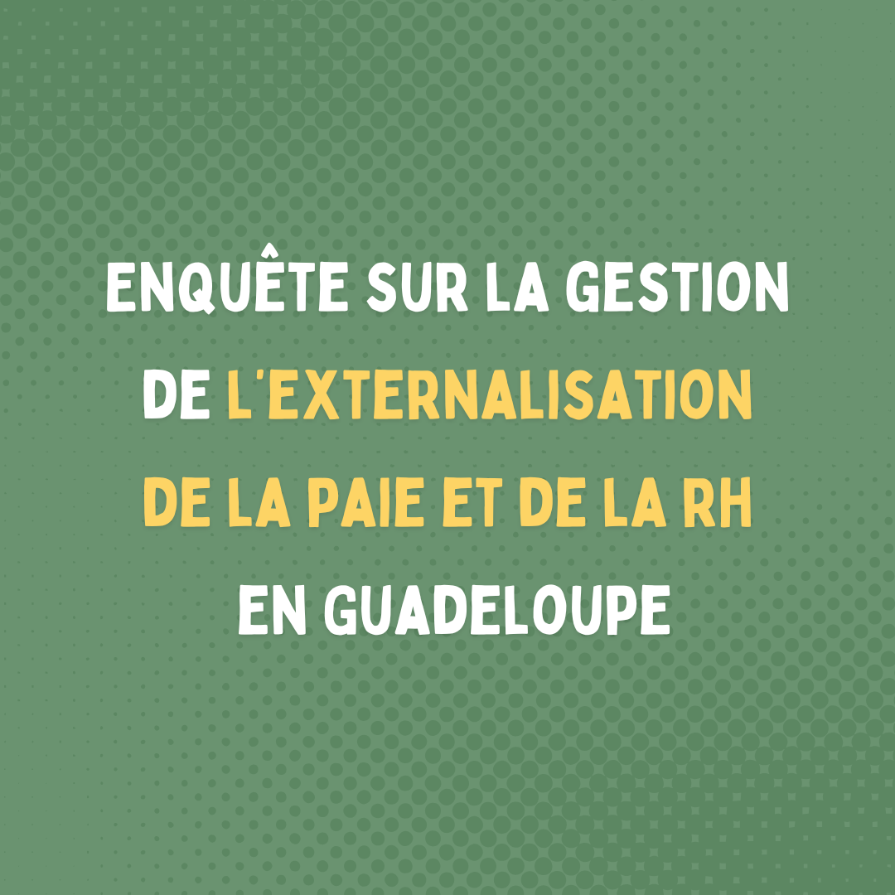
Enquête de satisfaction
Projets scolaires
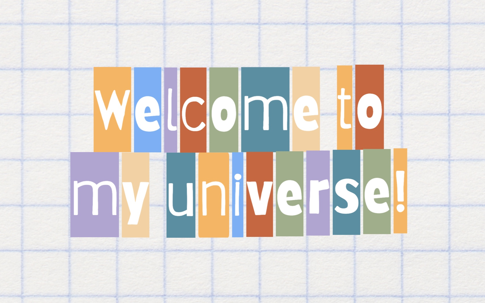
Portfolio personnel
Projets scolaires

Mission pédagogique Québec
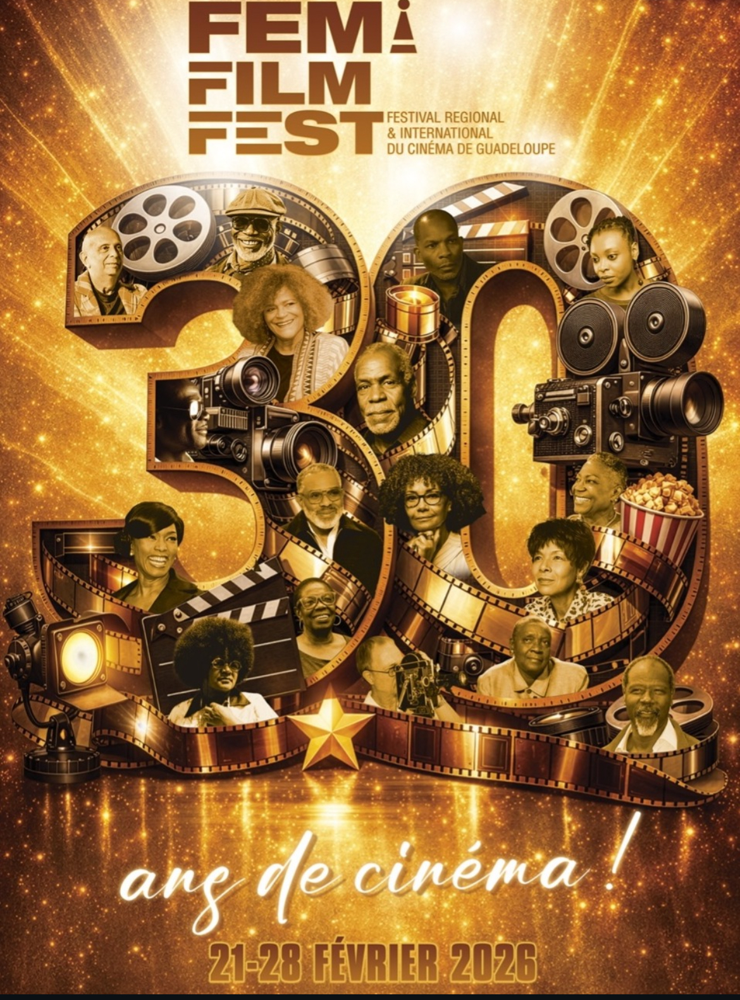
Participation en tant que jury au FEMI 2025 et 2026
Projets entreprise
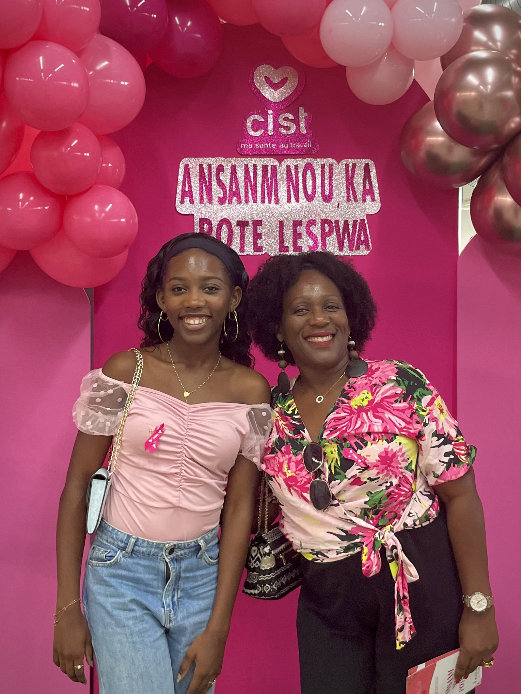
Communication chez Dwetaly Consulting
Projets personnels
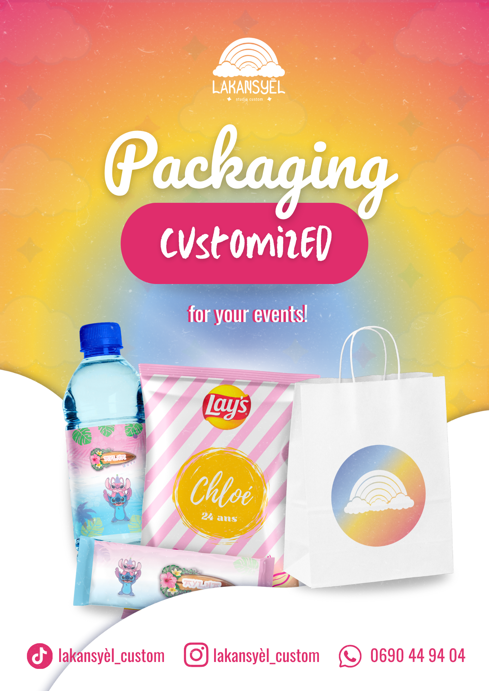
Lakansyèl studio custom

Mes Hobbies
Mon CV
Découvrez mon parcours et mes expériences !